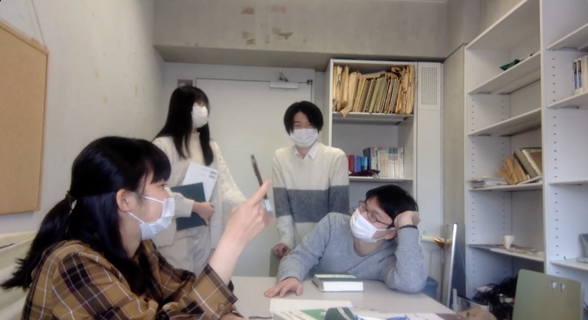

「例会を通して、学んだこと」

法学部１年 キノコ
一年次に受講していた憲法の授業をきっかけに、種々の社会問題を憲法の視点から考察することに興味が湧き、当サークルへの入会を決めた。
毎週の例会では、発表者が議題の性格や関連する判例などを、本質に踏み込んで解説してくれるため、新たな法知識の吸収は勿論のこと、法的思考力が徐々に鍛えられていくのを感じる。本題の議論では、臆することなく、自らの見解を他者へ述べることができる安心感の下、自らが述べた見解に対して、他者から質問を投げかけられたり、相反する見解を述べられたりしたのを機に、自らの既存の考えを新たな視点から見つめ直し、深めていく過程や、自らでは発想し得なかった、他者の見解に耳を傾けることを通して、一つの物事を多角的な視点からとことん追究していくことができる点が醍醐味だと思う。
対話を通して学べたものがある
法学部１年 鈴木
これまで自分の意見を人に言うことにためらいを感じていたが、公法研究会に入って自分のつたない意見をきちんと聞いて受け止めてくれる先輩や同級生に出会い、率直な意見を言い合うことが出来るようになった。ある日ジェンダーについて話し合った際、今のジェンダー議論は行き過ぎていないかと僕が提起したら、会員の一人が「それはジェンダー平等への過渡期なのだ」といった。このように、なるほどそういう考えもあるのかという僕が今まで気づけなかった視点を提供してくれる空間なのである。